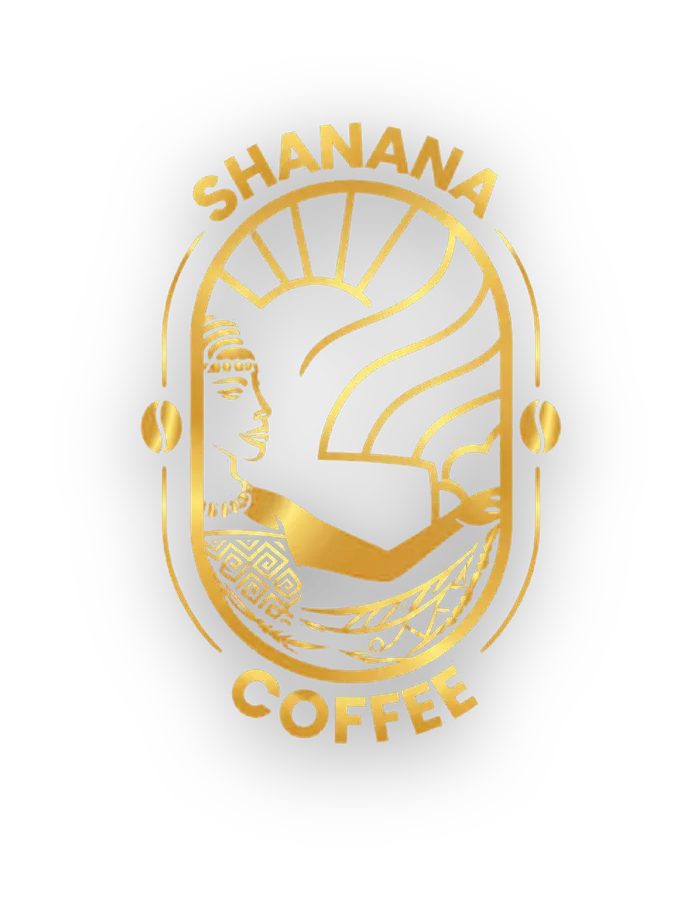

Part II · Our story
Coffee is more than a beverage. It is a chain of human stories.
Chapter V · Where it begins
Long before coffee reaches your cup, it begins with someone tending the land, nurturing a crop, and investing their time, knowledge, and hopes into a harvest.
Yet, too often, the people at the beginning of that journey have the fewest opportunities to benefit from the value they help create.
From cherry to cup · tap a stage to jump to it
Photos: David Stanley (CC BY 2.0), Alorin (CC BY 4.0), U.S. Fish and Wildlife Service, MarkSweep, Roger Burger, Edward, via Wikimedia Commons.
Chapter VI · What we believe
Shanana was built around a simple belief:
The people who create value should have the opportunity to share in it.
Chapter VII · Our vision
We envision a coffee business where farmers are recognized as business partners, communities have opportunities to grow, and customers can enjoy exceptional coffee with a deeper understanding of where it comes from.
Our ambition is not to build a business that depends on generosity, but one where economic opportunity is embedded in the way we operate.
A commercially sustainable business capable of creating lasting value through:
Chapter VIII · Both sides of the cup
We aspire to support stronger livelihoods, local value creation, and long-term economic opportunities.
We aim to create opportunities for entrepreneurs, business partners, and individuals who share our belief in the power of coffee to connect people and economies.
Every cup represents a connection between these two worlds: between the hands that cultivate coffee and the hands that enjoy it.
Chapter IX · Accountability
Our commitments represent the future we are working toward, not achievements we claim to have already delivered.
As Shanana grows, we will measure our progress, hold ourselves accountable, and publish our impact only when it can be verified.
Because meaningful change is not defined by the promises we make, but by the opportunities we create.

Chapter X · Our emblem
The Shanana Coffee logo is a bold and elegant emblem that draws from cultural heritage, natural richness, and the warmth of coffee itself.
Gold against black creates an aura of luxury, excellence and prestige, positioning Shanana as a high-quality, premium brand. Gold also reflects the richness and value of coffee as a cherished global commodity.
At the heart of the logo is the profile of a person adorned in traditional attire, symbolizing heritage, authenticity, and the human hands behind every coffee bean. It conveys a deep respect for the people, traditions, and communities that cultivate coffee.
The arching lines above suggest a rising sun: new beginnings, energy, and the start of the day, perfectly aligned with coffee as the beverage that awakens. They also hint at where coffee is grown: sunlit highlands and fertile lands.
The final chapter
From the hills of Nyaruguru to your counter: request samples, wholesale pricing and terms.
Partner with Shanana →